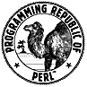

An introduction to Perl for Java programmers
Overview

This article is intended to help experienced Java (or possibly C++)
developers to get started used Perl. It isn't a Perl tutorial --
there are plenty of those about -- but a guide to how Perl
implements features that will be familiar to a Java programmer.
I assume that you are basically familiar with programming language
concepts, object orientation, and how compilers and interpreters
work.
If you are a Java programmer, you'll find
many things refreshingly familiar in Perl. You'll also find many things
that are disturbingly different. On the familiar side, Perl is
conceptually similar to Java. By that I mean that it can be used in
the same way to tackle the same basic problems. It is procedural,
it has similar keywords and constructs, functionality is
divided into subroutines (or methods, or functions, if you prefer),
and it supports object orientation, exception handling, and packages.
On the unfamiliar side, it has a very fluid syntax, and a much larger
set of basic language features than Java.
By `fluid syntax' I mean that Perl supports many different
ways of saying the same thing.
For example, here is a snippet of Java code.
if (!test)
{
throw new Exception ("aargh");
}
This could be expressed perfectly well in Perl like
this:
if (!test)
{
die ("aargh");
}
and you'll notice how similar this is to the Java version. But it
can also be expressed like this:
unless (test)
{
die ("aargh");
}
with the
unless operator meaning `if not'. But more
commonly an experienced Perl hacker will write something
like this:
test or die ("aargh");
In this example, we rely on Perl's short-circuiting of the
or operator to ensure that
die
is not executed if
test is true.
Why could we not write the Java version in the same, compact form?
Well, Java has a very rigid syntactical structure. First, logical
operators like AND (&&) and OR (||) can only be used
on operands that have boolean type.
test, we assume,
does; but what about
throw? In Java,
throw
is not assignable at all: you'd can't get a value from it. So
we couldn't use
throw in a logical comparison.
Second, the statement constructed from logical operators must
itself return boolean type. Third, a logical comparison cannot
stand as a statement in Java.
if (x || y){}; might
be good Java, but
x || y; isn't.
You can make your own mind up about whether Perl's increased syntactic
flexibility makes it `better' or `worse' than Java; it certainly
does allow some very common operations to be expressed in compact
form, but they are often unreadable to non-Perl programmers.
Because I had been using C and Java for many years before starting
to program in Perl, I tend to write Perl programs like Java programs,
and the examples in this article will reflect that. For a Perl
guru, there are more elegant (or at more contracted) ways of
expressing the same thing, but then if you were a Perl guru you've no
need to read this.
Considering the basic set of language features, Perl is much richer
than Java. That doesn't mean that it can do more, it just means that
the basic language can do more. The Java philosophy has always been
to have a very simple core language, and put all other functionality
into the standard class library. So, for example, Perl supports
associative arrays as part of the language. Java does this through
classes in the
java.util package. Perl allows
regular expressions to be written directly into program statements,
while Java will expect to find this functionality encapsulated
into a class. In the end, neither is better than the other, they're
just different.
Basic stuff
So let's examine the basic features of Perl from the perspective
of a Java programmer.
Program structure and philosophy
Perl, like Java, is a procedural language. A program consists
of
statements that tell the computer to carry out
certain actions in a certain sequence.
Statements are
grouped using braces {...} and
terminated
using semicolons (;) just as they are in Java. Perl, as
we shall see, is
more fussy about the use of braces than
Java.
Overall, Perl's syntax can be very close to Java's. Many of Java's
keywords and structures can be found in Perl (which is hardly
surprising, since they share a common origin in C). However, Perl
is syntactically very fluid compared to Java. The same statement
can be expressed in a number of different ways. Also, Perl
has a much larger set of keywords. If you are a Java programmer,
you'll very likely not use most of them.
Perl has some notional object-oriented features but, unlike Java,
it is possible to write a perfectly satisfactory Perl program without
defining a single class. Object orientation is optional.
Perl uses garbage collection, and the developer is not
expected to get involved with memory management issues.
Unlike Java, it is possible in Perl to define objects that
cannot be recovered by the garbage collector, even when they
go out of scope. The textbook example is to create two
reference variables that reference each other; this brings
us on to:
Like C++, and unlike Java, Perl allows specific manipulation
of references to variables.
Perl, like Java, is
case sensitive throughout.
On the whole, Perl is
weakly typed, compared to Java.
Compilation and execution
Like Java, Perl is primarily an interpreted language. That is,
it does not produce machine code that can run natively on
any platform. Instead, it relies on a run-time environment to
support the execution of code. The normal way of running Java
applications is to use the compiler to translate them into
Java bytecode. The bytecode is saved in a separate file (a `.class'
file), which is then fed into the run-time environment.
So, working with command-line tools, we will normally compile
and execute like this:
javac Test.java
java Test
By
default, Perl does not work this way. The Perl interpreter
translates the Perl source code into a parse tree, which is then
interpreted in the same process using the Perl runtime. Perl
execution is thus a one-stage process. So, given a Perl application,
we could do:
perl Test.pl
In a Unix environment, a more common method is to begin a Perl
source file with a directive that tells the operating system
to invoke the Perl interpreter. Typically we would start the
source file with a line like this:
#!/usr/bin/perl
The program can then be run directly from the command line:
Test.pl
To the best of my knowledge, this technique has no equivalent on
Windows platforms. However, what you can do on Windows platforms -- or
at least on some Windows platforms -- is set up a shell association
between the `.pl' filename extenstion and the Perl interpreter using
the Explorer or File Manager. This, I am reliably informed, works
from the command line on Windows XP and Windows 2000, and may
work on other versions. It should work from an icon as well.
Of course, you're limited to naming your
Perl scripts with files that end in `.pl', but that's not unusual
anyway.
More recent versions of Perl allow more sophisticated
methods of compilation and execution. For example, there are
now utilities that will translate Perl into C. The C source can
then be compiled to native machine code. Alternatively, most
Perl implementations now allow bytecode output, which can then be
used in exactly the same way as Java bytecode. The bytecode is
platform-independent,
and should be capable of execution by any compatible Perl runtime.
It's probably true that Perl's bytecode interpretation is less
well-developed than Java. In particular, there is as yet no
stable just-in-time (JIT) compiler. A good Java virtual machine will use
a JIT compiler to compile the bytecode to native machine code on
the fly, and this will result in very fast execution. In practice
however, the performance of practical, real-world Perl applications is
not markedly inferior to Java.
Execution sequence
As you probably know, execution of a Java program (apart
from static initializers, etc) begins with a method called
main() in a specified class. All code and data must be
in some method or other, in some class or other. In Perl, execution
order is (mostly) strictly top-to-bottom, starting with a specified
file. Statements other than function definitions are executed as
encountered. No special effort need be taken to indicate that the
execution should stop: this will happen when the end of the file is
reached.
Thus, the following is a valid, complete Perl program:
print "Hello, world!\n"
There are some exceptions to the top-to-bottom rule. First, it is
possible -- and reasonable -- to execute a separate, complete Perl
program within another Perl program. This allows Perl programs to be
built from separate `modules', just like Java (see below). Second,
modules can have constructors and destructors (somewhat similar to
Java), and an `autoload' facility (not at all similar to Java).
In Perl the function called
AUTOLOAD
is called whenever a reference is made to a non-existent function;
this can be used to generate the function dynamically.
Execution can be terminated before the end of the file using the
die function -- which throws an exception -- or the
exit() function -- similar to
System.exit() in Java
-- or using a number of other constructs.
One of these is the archaic
__DATA__ directive, which
informs the interpreter that everything thereafter is data, not
executable code. The program can read this data using a predefined
file handle. There is, of course, no equivalent to this technique in Java
(which is what makes it interesting).
Packages and modules
Conceptually, Perl's packaging system is not all that
different from Java's, although the underlying implementation is
very different. In Perl, one program includes other programs or
modules simply by loading and executing them at runtime. This execution
causes any functions defined in the modules to become available.
There are two basic ways to
do this. First:
require Fred;
processes the file
Fred.pm, which is assumed to be
in one of a standard set of search directories. Alternatively
use Fred;
has similar functionality, but modifies the namespace of the
including file such that the functions defined in
Fred
do not need to be referenced with their package names. That is,
it imports the names in the module into the including program's
namespace.
In a sense,
use behaves similarly
to Java's
import. Classes referenced by an
import do not need to be referenced with their
full class names (including the package): a short class name will
do. The same is true in Perl.
Just like Java, Perl understands packages, and packages can
be hierarchical. Also as in Java, the package hierarchy
corresponds to a directory hierarchy.
So, the following Java:
package calculator;
import math.Complex;
is loosely equivalent to this Perl:
package Calculator;
use Math::Complex;
In the Perl example, you can expect to find a file called
Complex.pm in a directory called
Math.
The roots of the package structure can be specified on
the
perl command line, or default to
system-defined locations, just as in Java.
Note that the package separator is `::'. As in Java,
you don't need to give the full package name for an entity
which is in the same package as its user, but it doesn't
do any harm if you do. Unlike Java, the same file can
(in principle) include multiple packages. The
package
function in Perl takes effect from where it is used, not
over the whole file. The use of capital letters for package
names (and class names) in Perl is a rule, not a convention.
Where Perl's packaging system differs most obviously from
Java's is it's use in object-oriented programming (of which,
more later). In Java, when we say
package x;
we mean `this is a class in package x'. The name of the class is
specified later in the file. In Perl the same line
means `this is a class called x'. In Perl, a package is a package
of functions, not a package of classes. This is not a problem in
practice, because packages -- in Java and in Perl -- can contain
other packages. So all we need to do is to create one additional
level of package in the Perl program and we have a situation
analogous to that in Java.
Comments
Comments are introduced by a hash # character, which need not
be the first character in the line. There is no (official)
equivalent of the Java/C++ `block comment' /* ... */, which is
a shame. There is, however, a `pod' comment block, which is used
by the Perl documentation generator. This is similar to
Java's /** ... */ comments, except that pod comments
can't be defined to include less than a whole line.
A pod comment block might look like this:
=pod
This is a comment
So is this
=cut
There are pod directives for section headings, etc.,
just like the `@' directives that Javadoc uses for Java
documentation.
Literals, variables, and identifiers
Lexical symbols and tokens
In Java, a string of characters that begins with an alphabetic
or underscore is treated as an identifier, while literals
must be declared as such in some way:
String name = "fred";
double x = 2.0;
That is,
String and
name are identifiers,
while
fred is a literal. `
2.0' is a literal
as well, because it begins with a digit; this does not confuse
the compiler because identifiers can't begin with digits.
In Perl, identifiers must
be indicated, while literals need not always be:
$name = fred;
$x = 2.0;
Here,
$name is an identifier; the $ indicates that it
identifies a scalar variable (see below).
fred
is a string literal.
x is also a variable, as indicated by the $. Both these
statements assign literal values to variables. Note that
`fred' did not have to be quoted. However, it would also be correct to
say
$name = "fred";
or
$name = 'fred';
So what is the difference? It is related to
variable expansion
(or `interpolation'),
a concept with no equivalent in Java but very familiar to shell programmers.
For example:
$name = 'fred';
$message = "Hello $name \n";
print $message;
Line 2 substitutes the value of the variable
name into the string
message. It also turns the escape sequence
\n
into whatever character is a `newline' on that platform. The form:
$name = 'fred';
$message = 'Hello $name \n';
print $message;
displays the string exactly as entered; no substitution takes place
and the
\n remains exactly as written.
In reality, the form
$name = fred;
is not all that useful, for two reasons. First, it only works
where there is a single
token. This is a syntax error:
$message = Hello fred;
Second, an unquoted string of characters that is not identified
as a variable of some sort may be a
file handle (see below).
In practice, therefore, you will mostly see Perl strings declared similarly
to Java Strings, but with a $ sign in front of the name.
The $ is not a BASIC $, which indicates a string
variable (although it does in this case), in Perl it indicates
a scalar, not necessarily a string. Note that in
Java a variable is declared by stating its type, but the type does not have
to be given when the variable's value is taken. Perl requires the $ sign
for both declaration and use of variables, because it denotes
`scalar context' -- a concept which will be explained later.
Although the use of single and double quotes to group characters into
a string literal should be familiar to Java programs, in fact,
Perl's quotes are simply conventional shorthand for a
general-purpose token-grouping scheme that has no equivalent
at all in Java. For example, rather than writing
$name = "fred";
I could have written
$name = qq!fred!;
which has exactly the same effect. The token `qq' indicates that
some tokens are to be grouped into a single element, and the
`£' identifies the boundaries of the grouping. In fact, I could
use almost any punctuation symbol instead of £, provided that
the opening and closing symbols are compatible.
In practice, Java developers are unlikely to use this notation as
it is so different from Java, but it is widely used for one
application: defining a string that has lots of quotation
marks internally. By using `qq' we can define the open and
close symbols to be something other than ", so we can use "
freely in the string itself. Otherwise every instance
would have to be escaped.
Substitution
As hinted above, Perl has syntactic elements for variable
substitution, and other forms of substitution. These devices
are largely unknown in Java.
Variable substitution can be used instead of string concatenation
(although there is a concatenation
operator: see below). This fragment of Java:
String m1 = "Hello ";
String m2 = "World";
String message = m1 + m2;
cannot be implemented like this in Perl:
$m1 = "Hello ";
$m2 = "World";
$message = $m1 + $m2;
(in fact, the value of
$message ends up as zero, for
reasons to be explained later).
We need this:
$m1 = "Hello ";
$m2 = "World";
$message = "$m1 $m2";
The string
$message is made by expanding the two
strings
$m1 and
$m2 into a new string.
Some books refer to this as `interpolation'.
Perl also supports
command substitution, something totally
alien to Java. This Perl fragment sets the value of the variable
$ps
to be the output from running the `ps' command.
$ps = `ps`;
Again, this notation should be familiar to anyone with experience of
Unix shell scripting. Of course, this can be done in Java (create a
process, create input streams to capture its output, bind the input
streams to the process output, create threads to absorb the output,
execute the process...) but its very easy to do in Perl.
Another form of substitution is
filename substitution. This
works similarly to Unix shells. The string is delimited using
angle brackets. Here are some examples:
# get the user's home directory
$home = <~>;
# get the names of all files
# in the /etc directory
@files = </etc/*>;
An example of Perl's syntactic flexibility, which is confusing
and irritating to Java programmers, is that almost the same notation as
above can be used to do a file input; the following reads all
lines from a file specified by file handle
f into
the array
lines.
@lines=<f>;
Data types and type checking
Perl supports a very small set of primitive data types: integer,
real, and string. These basic types are called
scalars
as they store a single atomic value.
Perl also supports arrays (indexed and associative)
of these items (see below),
and references to them. Java does not support explicit
references, but does (invisibly) support `handles', which are
in a sense references to objects.
Note: Perl does not support a `character' data type
like Java's
char.
Operations on characters are usually treated as operations on
strings one character long. Alternatively, characters can
be manipulated by their ASCII values. The functions
ord and
asc convert a one-character
string to an ASCII code and vice versa.
Java is strongly typed, and requires that all variables be typed before
use. Perl has no such restriction: a variable might be declared (e.g., using
$) but need not be typed at the same time. In fact, unless you
use Perl in `strict' mode, you don't even need to declare variables
before use: they just take on default values the first time
they are used.
In Perl, a symbol gets a type when it is first assigned to. Until
then it is undefined; the
defined function can be
used to determine whether a symbol has a value or not:
if (defined ($some_variable))
{
...
}
As well as scalars, arrays, and references, Perl supports a number
of types that have no real equivalents in Java. A `code' variable
denotes a subroutine, and is mostly used to construct function
pointers. A `typeglob' contains symbol table information, and
an `lvalue' is a entity that can be the subject of an assignment
and is not one of the other types. There are various tricks you can
do with these, but I have not found them to be very useful on many
occasions (not because they aren't useful in general, but because
I usually look for Java-like ways of doing things). One other
type that
is useful is the filehandle type, which will be
described later.
Lists and arrays
Perl's concept of an array is similar to Java's, but also
has elements of a
List. For example, where we
could say in Java:
String[] months = {"Jan", "Feb", "Mar"};
In Perl we would say:
@months = ("Jan", "Feb", "Mar");
In both cases we have defined and declared an array of strings.
In Perl, there is a technical distinction between an array and a
list. The right-hand-side of the assignment above is a list,
not an array, because it does not have a name. In other words, an
array is a `named list' in Perl. However, even the standard
Perl functions get confused between lists and arrays; the function
wantarray actually takes a list as an argument, not
necessarily an array, and the documentation is decent enough to
acknowledge this. So, in summary, don't assume that the distinction
between `list' and `array' in Perl is important, or maps onto
the (important) distinction in Java.
Having defined the array (or list) we can extract elements from it using the
subscript operator []. In Java:
String month = months[2];
In Perl:
$month = @months[2];
Notice that both Java and Perl number array elements from zero.
Perl also allows sub-arrays to be extracted directly. For example:
@earlyMonths = @months[1,2]
extracts
months[1] and
month[2]
from
@months and forms a new array from them.
In Java, we could do this by assigning the array elements to
a
Vector or
List, and using the
subList method to extract the required elements.
In Java, the number of elements in an array is found like this:
int len = months.length;
In Perl, we have:
$len = scalar(@months);
The reason this works is because the operator
scalar
forces the evaluation of
@months in a
scalar context. The nature of context is discussed
below; the point to note here is that forcing an array to
scalar context returns its length.
Unlike Java, Perl defines what should happen when a scalar is
assigned to an array, or vice versa. Such operations are not
allowed in Java. Another interesting difference is that
Perl does not respect array bounds: you can cheerfully
read beyond the ends of the array. In such cases, Perl simply
returns null elements. So, even though the size of
@months is 3, it is not an error to say:
$month = @months[999];
you just get a null element.
Perl also has built-in support for associative arrays; see below.
As well as extracting elements from lists using indexing, Perl
also supports direct assignment of scalar variables from lists.
Again, this has no equivalent in Java. The principle may be
illustrated using an example:
@months = ("Jan", "Feb", "Mar");
($m1,$m2,$m3)=@months;
Here the variables
$m1, etc., are assigned directly
from the corresponding elements of
@months. This
technique allows us to define functions that return multiple values
-- or at least give the illusion of doing so.
Hashes
Java Hashtables (
java.util.Hashtable) are similar
to Perl's associative arrays, or
hashes. However, Perl
treats a hash as a language construct, while in Java it's implemented
in a class. A hash is an array in
which the index is a key string, not a number. So, the
following Java:
Hashtable h = new Hashtable();
h.put("name", "Kevin");
h.put("address", "London");
System.out.print ("Address of " + h.get("name") +
" is " + h.get("address") + "\n");
has this equivalent in Perl:
$h{"name"} = "Kevin";
$h{"address"} = "London";
print ("Address of ", $h{"name"}, " is ",
$h{"address"}, "\n");
In both cases the output is
Address of Kevin is London
Note that references to the whole associative array -- rather than
elements of it -- are made using the % operator, not @ as for ordinary
arrays.
An interesting use of an associative array is to store the
program's environment variables. These end up in an array
$ENV. For example:
$hostname = $ENV{"HOSTNAME"};
References
This section is quite technical, and may be unfamiliar to
Java programmers. This is because,
unlike Java, Perl supports explicit references to variables. This is
important because Perl parameter passing is by value,
so if a function is to modify the data passed to it, you
must explicitly pass a reference. In Java, everything is
passed by value except for objects, which are passed transparently
by reference. That is, you don't have to say you are passing
a reference, the compiler makes this assumption (Java nerds
please don't write in about handles, OK? This explanation is
good enough for now). In summary, Java references are invisible to
the developer, which makes for simplicity at the expense of
flexibility. Perl goes for flexibility at the expense of simplicity.
Perl scalar references are easy enough to declare and use:
# $x is an integer
$x = 2;
# $ref_x is a reference to integer $x
$ref_x = \$x;
# $$ref_x dereferences $ref_x into $x
print $$ref_x, "\n";
This produces the output `2', which was the original value
of
$x.
The operator \ creates a reference to whatever it is applied to.
The operator $ applied to a reference dereferences it to its value.
You can, of course, create references to references. Incidentally,
the combined use of references, weak typing, and garbage collection
can lead to problems. Consider this example:
$a = \$b;
$b = \$a;
$a and $b refer to each other, so they can't be garbage collected.
This can't happen in Java, because we can't set references
explicitly like this.
References are particularly important when used in combination
with arrays. This is because Perl doesn't supported multi-dimensional
arrays. In addition, as we shall see, there are problems with
passing whole arrays as arguments to functions in Perl.
Perl has an explicit syntactic device for creating references
to arrays, the use of square brackets. So, for example,
this code snippet creates a two-dimensional array.
@two_d = ([1,2], [3,4]);
In fact, what it really creates is an array of two references,
each of which points to an array of two integers. So, to
extract a particular value (let's say row 0, column 1) of
this array we could -- if we were feeling masochistic --
dereference it explicitly like this:
my @two_d = ([1,2], [3,4]);
# get the reference to row 0
my $row_ref = $two_d[0];
# dereference the first row into a proper array
my @row = @$row_ref;
# get element 1 from this array.
$elem = $row[1];
In fact, Perl provides an explicit array dereference
operator, written `->'. So we could write:
$elem = $two_d[0]->[1];
In this example, the `->' operator dereferences
the array reference
$two_d[0] into
an array, so the index
[0] can then be
applied directly.
In fact, where we dealing with simple square arrays, we can use
the much simpler form:
$elem = $two_d[0][1];
which is essentially the same notation that Java uses. However, it's
important to understand the technicalities of referencing and
dereferencing because
you'll need to manipulate references when working with Perl classes.
Operators
Comparison
Comparison operators in Perl appear bizarre to a Java programmer.
First, there are specific comparison operators for strings and
numbers. Second, the result type of a comparison
depends on
the entities being compared. In Java, comparison operators cannot
be applied to anything except numbers (and number-like entities),
and the result type is always
boolean.
The number comparison operators are essentially the same in
Perl as in Java: ==, !=, >, <, >=, and <=. There
is one additional operator, <=>, that has no direct equivalent
in Java; it returns the number 1 if the lhs is greater than the
rhs, -1 if the lhs is less than the rhs, and 0 if they are equal.
All the other numeric comparison operators return the
number 1 if the comparison is
true, and 0 if it is not. There is no specific boolean type.
The following table shows the standard Perl string comparison operators
and their Java equivalents, where
a and
b
are strings (or Strings).
|
Perl
|
Java
|
|
$a gt $b
|
a.compareTo(b) > 0
|
|
$a ge $b
|
a.compareTo(b) >= 0
|
|
$a lt $b
|
a.compareTo(b) < 0
|
|
$a le $b
|
a.compareTo(b) <= 0
|
|
$a ne $b
|
!a.equals(b)
|
|
$a eq $b
|
a.equals(b)
|
|
$a cmp $b
|
a.compareTo(b)
|
All string comparisons are done on the contents of the string. Java is
unusual among modern programming languages in that when the `=='
operator is applied to two strings, it does not produce
true if the contents are equal. In Java, two Strings are
equal only if
they reference the same object, not if they have the same contents.
Of course, Java's take on this is more technically correct: why should
a comparison of two
objects have defined semantics for Strings
and not for other objects?
Nevertheless, it is a rich source of error in Java programs.
The Perl string comparison operators (except
cmp) return
the
string "1" if the comparison is true, and
"", the empty string, if false. Greater than/less than
comparisons are done according to ASCII ordering. The
cmp
operator returns the
numbers -1, 0, or 1 like the <=>
operator does for numbers.
To add to the confusion some, but not all, number operators can also
be applied to strings.
The only consolation in all this is that the results of the comparison
operators are interpreted correctly by the conditional, looping,
and logical constructs, so the exact results themselves may not be
important. For example, constructs like
if (1 != 2) { ... }
and
if ("hello" ne "world) { ... }
behave in much the same way as common sense would suggest, despite
the unfamiliar mechanism.
Logical
Comparisons can be conjoined and disjoined using the
&&
and
|| operators just as in Java. The words
and and
or can be used instead if preferred. The
result type of the
conjunction or disjunction depends on the
types of the individual
terms, as well as their values, as was the case for the comparison operators.
So the comparison
("a" eq "a") || ("a" eq "b")
returns the string
"1", because both the individual
terms return a string.
Logical operators short-circuit in Perl as they do in Java. This
means, for example, that if the first term of an AND conjunction is
false, the rest of the terms are never evaluated, as the result
must be false. This leads to the totally bizarre situation that
not only does the result of the operator change according to
the values of the variables being compared, but the
type
can also change. In the example below, assume that
$a
and
$b are numbers, and
$c and
$d are strings.
($a == $b) || ($c eq $d)
If it turns out to be true that the numbers
$a
and
$b are indeed equal, then the second term is
never evaluated, and the result will be the number
1.
If
$a and
$b are not equal, then the
second term is executed, and the result will be a string! This sort
of behaviour is about as far away from Java's strongly-typed comparisons
as you can get. Happily, it does not usually cause a problem in
practice because the looping and conditional operators are designed
to handle the output of the conditional operators.
File tests
Perl's file test operators are derived from shell programming, and
have no direct equivalent in Java. They can mostly be emulated using
methods in
java.io.File, but the Perl operators are
more convenient, if rather cryptic. There are a large number of
file operators; here are a few examples.
# test if file exists
if (-e $filename) {...}
# test if file is a directory
if (-d $filename) {...}
# test if file is a tty
if (-t $filename) {...}
# test if file is a text file
if (-T $filename) {...}
Note that the `-t' operator is probably impossible to implement at
all in Java, unless we resort to using native method calls.
Arithmetic
Perl has much the same set of arithmetic operators as Java has,
including
+=,
--, etc. Perl also has
a power operator
**, which needs to be done as
a method call in Java. Perl does not concatenate strings using
+ as Java does: use variable expansion
(above) or the concatenation operator `.'.
$message = "Hello " . "World";
The standard Perl library contains the usual maths functions
(
sin,
cos,
log, etc).
What's more, there is a very nice implementation of complex
number functionality in
Math::Complex. This
package also installs overloads (see below) for the standard
arithmetic operators (+, -, etc) that makes them work on
complex numbers. Even if you aren't interested in complex number
maths, it's worth having a look at this package to see how
operator overloading works.
Operator overloading
If, like me, you lament the decision to omit operator overloading
from Java, then you'll be pleased to know that it is fully supported
in Perl. Using operator overloading, you can define the behaviour
of standard operators (like + and -) on program-defined classes.
Now, of course, we can get the same effect in Java using methods.
Suppose I define a class that represents exact fractions (e.g.,
fractions whose numerator and denominator are integers, but whose
value is non-integer, like 2/3). I can provide methods to do
arithmetic on these objects easily enough. So, in Java, to
add three fractions:
Frac frac1 = new Frac (2,3);
Frac frac2 = new Frac (3,4);
Frac frac3 = new Frac (5,6);
Frac frac4 = (frac1.add(frac2)).add(frac3);
But using operator overloading, in Perl I could write:
$frac1 = new Frac (2,3);
$frac2 = new Frac (3,4);
$frac3 = new Frac (5,6);
$frac3 = $frac1 + $frac2 + $frac3;
which I think is a lot more elegant. Now, operator overloading isn't
without its problems, and it wasn't left out of Java for no good
reason. However, it's nice to know that Perl does offer the
functionality if you want it. Of course, it can be taken to
extremes. You may remember that in C++ the `<<' operator
(normally a bit-shift) is overloaded on output streams, so that
you can do output like this:
cout << "Hello, world!" << endl;
This uses the operator in two totally different contexts, which can
be confusing and unmanageable. You can do this stuff in Perl if
you like. As this is supposed to be a comparison of Perl and Java,
and you can't overload operators in Java, I don't propose to say
anything more about the subject. If you are interested, look in
Math::Complex to see it at work.
Conditionals and loops
True and false
In Java, comparison operators yield a boolean result that can
be used as the argument to
if(),
while(),
etc. Perl has no specific boolean type, and conditionals can
take any data type as input. We have seen that the results, and result
types, of the comparison and logical operators depend on the
types of the operands. This means that Perl has a very different
notion of `true' and `false' to Java. The following table shows
how flexible Perl's notion of `truth' is compared to Java's:
|
Java
|
Perl
|
true
|
a number other than 0, any non-empty list, any string
except the empty String or "0"
|
false
|
0, an empty list, an empty string,
the string "0"
|
In addition, an undefined scalar is taken to be `false', so
some perl functions are written to return
undef
to indicate some sort of terminating condition.
Conditionals
if(), and
else are used exactly as in
Java. However, statements
must be grouped using braces;
the braces are never optional as they sometimes are in Java.
elseif is `
elsif' in Perl, for some
unaccountable reason.
Perl has no equivalent of the Java
switch statement,
so it has to be imitated using
if(){...}
elsif(){...}, etc.
A Perl loop construct that has no direct equivalent in Java
is
foreach. This iterates over the elements of
a list (or array). The example below iterates over the array
months, setting the variable
$m to
the current element of
@months at each step.
[Update 08/07: Java 5, a.k.a. JDK1.5, now has this feature.]
@months = ("Jan", "Feb", "Mar");
$n = 1;
foreach $m (@months)
{
print "month $n is $m\n";
$n++;
}
Java conditionals must have their dependent statements
grouped in braces, even if there is only one such statement.
In Java, this notation is optional. Because this is
rather ugly, many Perl developer make use of the
qualified statements. These are
single statements whose execution is governed by a conditional.
For example, the following Java:
if (x == 4) x = 0;
may be conveniently written in Perl as:
$x = 0 if ($x == 4);
Perl also has an `unless' conditional, which is equivalent
to `if not'. This can be used both with statement blocks
or qualified statements.
Note that
Perl has no switch statement,
so you'll need to use
if...elsif...elsif
instead.
Loops
Perl supports
while() {...} and
do {...} while() constructs exactly like Java.
However, Perl uses
next to indicate that the
next iteration should begin immediately (like Java's
continue) and
last to exit
the loop (like Java's
break).
Perl's
for loop is identical to Java's, but
the braces around the loop body are mandatory, even if the
loop has only one statement.
Functions
Calling functions
In Java, method calls have a fairly rigid syntax. Although methods
can be overloaded, completely arbitrary argument passing is not allowed.
Moreover, method parameters must be properly demarcated by brackets.
For example, in Java we might say:
String name = "fred";
System.out.print ("Hello " + name + "\n");
In Perl we could have:
$name = "fred";
print ("Hello ", $name, "\n");
That is, the
print function takes an arbitrary number of arguments.
Another distinction is that the brackets are not always necessary. For example:
$name = "fred";
print "Hello ", $name, "\n";
However, many Perl programmers quite sensibly eschew this usage, as it can
be hard to follow. Function prototypes (see below) can be used to
tell Perl how many arguments a function should expect.
NB: that there is another form of
print, which takes
a file handle as an argument. For example, if
f is
a file handle (see below) we can print to the file like this:
print (f "Hello", $name, "\n");
Note that there is conventionally
no delimiter between the file handle
and the argument list!
Like Java, Perl functions can return only one value to the caller.
However, because Perl supports direct assignment of scalars from
arrays (see above), we can get the illusion of returning multiple
values if we return a list.
For example, the function
split() splits a
string at a delimiter and returns both parts.
($before,$after) = split("=", "name=value");
We haven't really returned two values here, but it looks as though
we have.
Defining functions
Function definition is far less elegant in Perl than
in Java. There are no formal (named) parameters; instead,
the entire parameter list is passed in an array called
@_. It is
good style to extract the array elements into named variables
on entry to the function; failing to do so leads to ghastly,
unreadable functions.
The following example shows how a function may be defined
and called. This function,
logN,
calculates the logarithm of a number to an arbitrary number base.
sub logN{
$number = @_[0];
$radix = @_[1];
$result = log($number)/log($radix);
return $result;
}
print logN(128,2);
The keyword `sub' (subroutine) introduces the function; the function
body is defined within the braces.
NB: some versions of Perl require the function to be called using
"&" before the name. So we may have:
print &logN(128,2);
Modern Perls don't require this, but it may be advisable to call
functions this way for backward compatibility.
Like Java, functions need not be defined above the point in
the file at which they are called.
Perl supports a limited mechanism for function prototyping.
In the example above, the function
logN was
defined without a prototype, which means that it would not
be an error to call it like this:
logN(128, 2, $whoops);
The argument
$whoops would be ignored, but this
does make it easy to make trivial programming errors.
To reduce the likelihood of such errors, we can define
logN with a signature like this:
sub logN($$){
...
}
The two $ signs denote that the function expects two scalar
variables. Note that there is no way to stipulate that they
be of specific type. Because compilation proceeds from
top-to-bottom, Perl programs don't benefit from the use of
prototypes unless the functions are declared before they
are used. Because it can inconvenient -- or impossible --
to define all functions between they are used, Perl allows
function prototypes. These are simply declarations of
the function name and arguments. So we could write something
like this:
sub logN($$);
print logN(128,2);
sub logN($$){
...
}
Although the
logN function is used before it is
defined, the function prototype allows the arguments to
be checked.
Very important:
unlike in Java, variables defined within the function body are
not local to that function. Unless otherwise stated,
all variables are global. To restrict the scope of variables,
use the
my and
local keywords.
For example:
sub loop{
my $i;
local $j = 1;
for ($i = 0; $i != 10; $i++)
{
...
}
}
Here the variable
$j is `local'; this means that its scope
includes the
loop function and any functions called within it.
$i is defined using
my; this means that it is
entirely local to that function.
A peculiar consequence (peculiar to a Java programmer, that is) of
Perl's argument passing strategy can be discovered by running
this piece of code:
sub test
{
$num = scalar(@_);
print "args=", $num, "\n";
}
@a = (1, 2);
@b = (3, 4);
test(@a, @b);
The first line of
test() gets the size of the
array of arguments passed to the function. We call it as
test(@a,@b), so how many arguments are there?
If you say `2', you're thinking like a Java programmer. The
real answer is `4' because Perl simply flattens the arguments into a
single list and passes this flat list to
test().
Again, it's straightforward to deal with if you are expecting
this behaviour: simply pass references to the two arrays.
References are scalars, so they aren't flattened like this.
Context
The concept of `context' is crucial one in Perl, and one that has no
counterpart in Java. Because Java is strongly typed, the types
of all variables are known at compile time. In Perl, variable
types can be left undefined until runtime. This means that
there must be a mechanism to resolve the types of ambiguously
typed variables. For example, suppose the compiler
executes this line:
$t1 = 1 + test();
The function
test() can return
any type of variable. However, only certain
types can usefully be added to `1'. In
this case, the evaluation of
test()
is said to be in
scalar context in
general, and
integer context in particular.
If the function returns a value of a fixed type,
then Perl attempts to coerce it into a suitable
type for the context. For example, if it returns a
string then Perl attempts to convert it into an integer.
If the string can't be converted (e.g., it does not consist of
digits), then it is coerced to zero. If the value returned
is a list, it is coerced to an integer representing its
length. This can often be convenient, but is initially
confusing for Java developers used to a strongly-typed
environment.
Although Perl will attempt to coerce a value to the
appropriate context, it is possible for a function to
find out what context its caller is executing in.
This opens the possibility for it to return a different
value according to the context. This can be illustrated
using an example.
sub test{
return (1, 2) if wantarray;
return 99;
}
$t1 = 1 + test();
print $t1 . "\n";
@t1 = test();
print $t1[0] . "\n";
This code produces the following output:
100
1
The statement
$t1 = 1 + test();
calls
test() in scalar context. Therefore,
if wantarray
is false. So in this context the function returns `99', which is added to 1 to
give 100. However, the statement
@t1 = test();
tries to assign the result of executing
test() to an array.
Thus in the function
if wantarray is true, and the function
returns the array (1, 2). The caller then extracts item zero from this
array.
Needless to say, this technique has to be used with care.
File input and output
In Java, basic file I/O operations can be carried out using the
rather complex classes in the
java.io package.
To process text files, these classes usually have to be used
in combination. Perl has built in functions for handling
files, particularly text files. The basic steps are the same,
however: open a file, do something, close it.
Opening a file
Use the
open function, passing a file handle
identifier, and a filename. The filename should be
preceded by characters indicating the open mode. These will
be familiar to shell programmers:
filename open for reading
>filename open for writing, delete existing file
>>filename open for writing, append to existing file
>+filename open for reading and writing
You can also open a pipe to another command for reading or writing:
|command open pipe to command for writing
command| open pipe to command for reading
Here are some examples.
# open a file for reading
open(f "/etc/group");
# open a file for appending
open(f ">>log");
# execute command dmesg and open
# its output stream for reading
open(f "dmesg|");
Note that a file handle is a variable type in its own
right: it isn't a number or a string. It does not require
an identifying character (like $ or @) to introduce it.
Perl defines the special file handles
STDIN
and
STDOUT for standard input and standard
output.
Writing a file
A simple way to write a file is to use the
print
operator with a file handle argument:
print (f "Hello World");
Note the absence of a separator between
f and
the string.
As an example, here is how to open a file for writing, and
write a single line of text. Don't forget to close the file
afterwards.
open(f, ">log");
print(f "Hello World\n");
close(f);
In Java, the closest equivalent would be something like this:
FileOuputStream fos = new FileOutputStream ("log");
fos.println("Hello World");
fos.close();
If you try to
print an array, you'll find it is
output with no delimiters between the elements, which is
not very helpful. A quick and dirty way to output a
whole array, with elements separated by spaces, is to
put it in double quotes:
@months = ("Jan", "Feb", "Mar");
open(f, ">dummy");
print(f "@months");
close(f);
The `interpolation' carried out on quoted strings automatically
inserts spaces between the array elements.
Reading a file
The read operator is
<f>, where
f
is a file handle. The amount of data read depends on the variable
it is read into. If the variable is a scalar, then the next line is
read. If it is an array, the file is read a line at a time until
the end of the file, with each new line going into a new element
of the array. Clearly this will use a lot of memory if the file is
large.
So, to read a single line from file
log:
open(f, "log");
$line = <f>;
close(f);
The closest Java equivalent is just too ugly to write. Notice how
the Perl file handling functions are tailored to manipulating
ASCII text files. The Java scheme is much more flexible, but
very ugly when all you want to do is read or write a text file.
Object-oriented Perl
Perl has some object-oriented functionality, but it is somewhat
different to that offered by Java. In particular, there is
a strong overlap between Perl's concept of `package' and its
concept of `class'. You may remember that a Perl package is
a group of functions, not a group of classes as it is in Java.
If a package is a group of functions, it should be clear that it
is not all that different from a class; however, notions like
instance variables, inheritance, and constructors are not
fundamentally part of the Perl language; they can be implemented,
but require some work of the programmer. As a result, various
idioms have developed for handling such features. They are
not part of the basic language, and are not the only way to
implement OO functionality in Perl.
Classes and packages
In summary, a Perl class is fundamentally a package.
Consider the following Java class definition.
public class Test
{
public void m(String arg)
{
System.out.println ("This is object " + this +
", with arg " + arg);
}
}
The corresponding Perl class definition will look
something like this.
package Test;
sub m
{
my $self = shift;
my $arg = shift;
print "This is object $self, with arg $arg\n";
}
So far, not a million miles away from Java. However, you'll notice
that we've written the method
m to get something
called
$self
from the first argument supplied, while the `real' argument
will come from the second actual argument.
The keyword
shift
shifts all the elements of an array one place to the left, and
returns the left-most element.
When
shift is used without an argument -- as it is
here -- it operates implicitly on the argument list. So the first
shift shifts
something out into
$self, and leaves the original arguments in
the argument array. The second
shift shifts
the argument supplied by the called -- the `real' argument --
into
$arg.
What is the `something' that formed the first argument? It turns out
that it's either the class name, or a reference to an
object of that class (more details below). In either case, it's
supplied automatically as part of the method invocation. The caller
does not have to worry about it, but it's crucially important to
the object.
Passing object information
as an implicit first parameter to a method is characteristic of
most object-oriented languages, but normally it's invisible and
the developer does not worry about it. In Perl it's explicit. To
get the real arguments we have to
shift the object
reference somewhere first.
To call method
m at the
class level in Java, we would
write (inside another class):
Test.m(1);
which will produce output similar to:
This is object 0xFFD4421, with arg 1
In perl, we would write this:
Test->m(1);
and the output would be
This is object Test, with arg 1
The use of the operator `->' here simply tells Perl
to call the method
m in such a way as to
pass the object information in the first argument. We'll
discuss later where this information comes from in
a proper example.
Actually, I've told a little
white lie: you would not be able to call the method
m() at the class level in Java, because it was
not defined
static. This illustrates another
difference between Java and object-oriented Perl: methods may
be called at the class level or the object level (see below)
without any special provision. The only difference is in
the implicit first argument passed to the method.
Instances
In practice, of course, we would more frequently wish to create
instances of the class, and call methods on the instances, not
on the class. In Java, we would do something like this:
Test test = new Test();
test.m(1);
To understand the equivalent in Perl, we need to understand something
called a `blessed reference', and also that Perl does not
automatically provide a constructor for the class: you must do this,
by initializing a blessed reference. The blessed reference will
then serve as a reference for all future uses of that instance.
Although probably unfamiliar to Java programmers, a blessed
reference is nothing more than a reference that has been
told which package it is to be associated with. When such
a reference is used with the
-> operator, the
function call is made on a method with the specified name
in the package for which the reference was blessed.
This gives us a
rudimentary way of modelling object behaviour, because
the reference can be a reference to the object's state --
but I'm getting ahead of myself. For the time being,
consider this code, which makes the same method call
as the example above.
my $tester = "Fred";
my $ref_tester = \$tester;
bless $ref_tester, Test;
$ref_tester->m(1);
What's going on here, and what's `Fred'? The fact is,
``Fred'' is irrelevant, but we need a reference to
something to `bless'. So in this case we create
a reference to a simple string. The
bless
operator attaches it to the package (class)
Test;
so the last line calls the method
m() in
the package (class) to which
ref_tester has
been blessed. When
m() is called this way,
the first argument to the method
-- supplied automatically -- is, in fact, simply the
reference to the string "Fred". This isn't very useful
in itself, but we'll see how to make it useful in a while.
Constructors
So far, so good, if not very Java-like. The clever part is
to put the `bless' code inside a method, and call it a
constructor. Remember that we don't get constructors for free in
Perl, like we do in Java. So, here is the same package
Test,
with a constructor called
new (the name `new' is
not mandatory, as it is in Java; it's merely a convention):
package Test;
sub new
{
my $tester = "Fred";
my $self = bless \$tester, shift;
return $self;
}
sub m
{
my $classname = shift;
my $arg = shift;
print "This is class $classname, with arg $arg\n";
}
To call this method we will use code which instantiates
Test, and calls the method
m() on
the reference returned:
my $test = new Test();
$test->m(1);
Notice that now we have something that looks very similar to
Java. We could, of course, pass arguments to the constructor
if we wished. But hang on a minute: what's
new Test()
in Perl? It's just another way of writing
Test->new();
which is the same syntax we used earlier;
new Test()
just looks a bit more Java-like, and works exactly the same.
If you've been paying attention, you may have notice a slight
subterfuge on my part: I have oversimplified by not saying
what is
really passed to the class methods by
the
-> operator. It works like this.
If we use this operator with a class name (strictly a
package name), then the first argument to the called
function is simply a scalar representing the name of
the class. There isn't much you can do with this
scalar, but you
can pass it to
bless,
which sticks the name into a reference and returns the resulting
`blessed' reference. Note that what comes out of
bless
is a reference to some variable or other. When we apply
-> to this reference to make a method call,
then the first argument to the called method is the
blessed reference itself, that is, the output from the original
bless call.
In other words, if
a is a blessed reference from
class
P, then this call:
a->m();
calls method
m() in class P, passing
a
as the first argument to
m(). Method
m()
can then extract that argument and use it to determine its
own state, as we shall see. Note that this process is
exactly what happens in C++ and Java, you just don't see it
close up like you do in Perl.
Managing instance state
In the example above, we used a string reference called `tester' to indicate
the class the method should be called on. Again, it doesn't matter
what type that reference is, or what it contains, it's the `bless'
that makes it work. Given that this is the case, it should be
clear that we can bless anything, not just a string. If we
bless a hash, rather than a string,
we've got a simple method for handling state: we simply pass it
around in a hash. To illustrate this,
here is a class definition that exhibits `proper' object oriented
behaviour, where each object has its own state. We'll
examine it in more detail below. Note that the manipulation
of the objects is not very different from what we do in
Java, although the class definition is rather different.
my $test1 = Test->new(1);
my $test2 = Test->new(2);
$test1->printX();
$test2->setX(3);
$test2->printX();
#### class def starts here ####
package Test;
sub new
{
my $self = bless {}, shift;
my $arg = shift;
$self->{x} = $arg;
return $self;
}
sub printX
{
my $self = shift;
my $x = $self->{x};
print "This value of x is $x\n";
}
sub setX
{
my $self = shift;
$self->{x} = shift;
}
The constructor
new() creates a `blessed hashtable', and
returns a reference to it to the caller. Remember that
bless takes two arguments: the thing to bless and
the package it is attached to. The
shift operator
gets the first argument to the function
new, which
here is simply the class name determined by the Perl runtime. This
is exactly what
bless needs. So,
$self = bless {}, shift;
means `apply
bless' to an empty hash and this current
class name'. We then take the argument supplied to the constructor
by its called,
and place it in the hash, under the name `x'. This is equivalent to
setting an instance variable called `x'.
my $arg = shift;
$self->{x} = $arg;
When the constructor returns
$self to the
caller, it is really only returning a reference to the
hash, which now contains the state of the object. However,
this reference is `blessed' with the class name, so Perl
will not which class to make the method call on when the
reference is the subject of a method call.
Now let's look at the method
printX. This
method simply prints the value of the `instance variable'
x.
Because the Perl runtime supplies the
blessed reference itself in the first argument, and this
reference is to a hash that contains the object's state,
the
printX
method simply
shifts the state hash into a variable called
$self.
my $self = shift;
We can then get the value of the instance variable
`x' from the hash, and print it.
my $x = $self->{x};
print "This value of x is $x\n";
The method
setX works in a similar way: it gets the
argument supplied to the method (after shifting the object
reference into
$self) and puts it into the hash.
In summary, when we work with objects in Perl, we are generally
working with hashes that contain (1) the object's state, and
(2) the classname. There are other ways to get object-oriented
behaviour, but one will be enough for this short article.
So what is to stop the user of the object simply manipulating
the hash itself? The short answer is `nothing'. Perl's
object-oriented behaviour really has no concept of
access control: essentially, all data is
public.
Inheritance
There's one final point to deal with in our discussion of
object-oriented Perl: inheritance. In Java, again, the
process of making calls on methods which are inherited from
a superclass is largely invisible. In Perl, it's much
more in your face.
To start with, we define a class's base class using the
`@ISA' array. So:
package Dog;
use Mammal;
@ISA = ("Mammal");
This says that the current class is called
Dog, we want to
have access to functions defined in
Mammal (assuming it's
not in the same file), and
Mammal is the superclass of
this class. Actually, for technical reasons concerning identifier
scope that I have got space to go into here, we don't usually use
ISA this way because it generates a load of compiler
warnings in strict mode. Instead, we usually say
package Dog;
use base qw(Mammal);
which does the same thing without the grumbles.
All this is well and good, but what does
ISA do?
Essentially it provides a place for the Perl runtime to look
for methods that are called on the current class, but aren't
defined there. If a method is so defined, then we don't need
ISA. But then, if all methods are defined in all
classes, we don't need inheritance.
ISA searches are upwards recursive, so that if any class
in the
ISA chain has the method defined it will
get called. At the top of the hierarchy is the class called
UNIVERSAL. This has much the same role as
java.lang.object in Java: to provide basic
functionality that all classes will have access to. Previous versions
of Perl left it to the developer to provide this functionality, but
modern versions define simple methods like
isa()
which tests whether the class is of a named type, and
can() which tests whether a method is defined
(in Java, we'd need to use the reflection API to do this).
However, it remains possible to extend
UNIVERSAL,
something which has no equivalent in Java.
What if we need a method in a particular class to call its
own superclass? In Java, we'd use
super to
do this, either on it's own in a constructor, or
with a method name elsewhere. Perl uses the same technique,
but with slightly different syntax. This is best illustrated
using a comparison. In Java:
public class Dog extends Mammal
{
public void getDistinguishingFeatures()
{
return super.getDistinguishingFeatures()
+ ", barks, chases cats";
}
}
And in Perl:
package Dog;
use base qw(Animal);
sub getDistinguishingFeatures
{
my $self = shift;
return $self->SUPER::getDistinguishingFeatures()
. ", barks, chases cats";
}
However, in Java there is a simplified form of
super for use in constructors, because
we don't need to supply a method name (the constructor
always takes the same name as the class). In Perl, there
is no mandatory name for a constructor, so a constructor
must call it's superclass's constructor by name. For
this reason, it makes sense to use a common name (like
new) for all constructors.
You may have noticed that
ISA is an array.
Does this tell you anything? It turns out that Perl
supports multiple inheritance. You may not like
this idea -- the Java language developers didn't -- but
it's there; you don't have to use it if you don't
want to. If you do use it, you need to use it with
care just as you do with other languages that support it.
For example, there's nothing to stop a class W inheriting
class X twice, by inheriting from Y and Z that themselves
are derived from X. If this happens, it is possible that
you'll end up with the methods in X getting called
more than once for each method in W.
Comparison
To sum up, the following table provides a brief comparison
of the availability of various OO features in Java and in
Perl.
| Feature
| Java |
Perl |
| Class methods |
Yes, using static |
Yes, but no compile-time enforcement |
| Instance methods |
Yes |
Yes, using blessed references |
| Class variables |
Yes, using static |
Yes, of a sort, using package-scope variables |
| Inheritance |
Yes |
Yes |
| Multiple inheritance |
No |
Yes |
| Polymorphism (type of a reference determined at runtime) |
Yes |
Yes |
| Constructor |
Yes, standardised method naming |
Yes, any method can be a constructor |
| Destructor |
Yes, method finalize called at the
whim of the garbage collector |
Yes, method DESTROY called at the
whim of the garbage collector |
| Operator overloading |
No |
Yes |
| Instantiation by name at runtime |
Yes, using reflection |
Yes |
| Method calling by name at runtime |
Yes, using reflection |
Yes |
| Method access control |
Yes, using public,
protected, etc |
Not easily. By convention, `private' methods are
denoted using names beginning with underscores, and programmers
are expected to respect this convention when using each other's
classes |
| Inner classes |
Yes |
No, although this behaviour can be
simulated using other techniques |
| Abstract classes |
Yes |
No, but you can define a class which cannot be
instantiated, by making its constructor throw an exception.
It probably isn't possible to stop it being instantiated
by indirect methods, however |
| Interfaces |
Yes |
No; Perl is weakly typed, so the notion of
an interface makes little sense. A common use of interfaces
in Java is to specify that a method takes an argument
which represents an object with certain methods. In Perl,
there is nothing to stop a method being supplied with
any type of argument at all. At runtime, you can use the
can() method to check whether the object you
get exposes the methods you expect |
Regular expressions
Perl has very comprehensive regular expression support built right
into the language. Of course, we can use regular expression
techniques in Java, but with the logic implemented in classes.
If a program does a lot
of regular expression manipulation, Perl's syntax is very
convenient, albeit somewhat opaque. Perl's regular expressions
mostly follow the POSIX standard, which is well documented
elsewhere; the syntax is beyond the scope of this article.
Here are a few examples.
# Match if $x contains `world'
if ($x =~ /world/)
{
...
}
# replace all instances of `placeholder' in string
# $s with the contents of variable $replacement
$s =~ s/placeholder/$replacement/g
The final `g' indicates that there may be more than one
match on a line.
Because Perl regular expressions have no equivalent in Java,
this is probably not the place to pursue the matter.
Exception handling
The core of Perl's exception handling is the
die
keyword. The execution of
die causes the
current function to be aborted, and the exception
to be raised in the caller. The caller can either
trap the exception, or allow it to bubble up to its own
caller. Eventually, the exception will be either
trapped and handled, or passed out to the Perl runtime
which will abort the program. This behaviour is, in outline,
very similar to what happens in Java. The code below shows
a simply example, in which
eval() is used to
trap the exception.
eval() has a number of uses;
here it is simply being used as a function that can
run other Perl code.
sub test1{
die "oops";
print ("test1 OK\n");
}
sub test2{
test1();
print ("test2 OK\n");
}
eval
{
test2();
};
if ($@)
{
print "Error: $@\n";
}
Here
test2() calls
test1(),
which raises the exception and passes an error message.
test1() aborts before the
print
line, as does
test2(), because it does not
trap the exception. The call to
test2() was
in an
eval(), so the exception just causes
eval() to set an error message; it does
not abort the
eval(). The
if ($@)
line just prints the error message that was set by
eval; part of this will be the original argument
to
die.
So, in this example,
die is loosely equivalent
to
throw,
eval to
try,
and
if ($@) to catch. However, this
technique uses a simple string to indicate the exception, and
thus exceptions cannot be typed. In Java, we typically use
a hierarchy of exceptions, and allow methods to catch specific
subtypes while allowing others to propagate out to the caller.
Recent versions of Perl support a similar mechanism, using
the object-oriented extensions. The standard
Error package allows object-oriented exception
handling that is very similar to Java's, even using the same
keywords:
try and
catch.
Summary
We've seen that Perl offers many of the same features as Java, and
can be used in a Java-like way if you like. It can also be
used in a non-Java-like way, and its a good idea to become familiar
with this style of Perl as well, if you have to read code written
by other people. Perl also offers features that have no
direct counterpart in Java, like command substitution and
regular expression processing.
In this short article we have only scratched the surface of the
Perl language. Among the features that the language supports,
and which we haven't even mentioned, are: threads, unicode,
localization, data structures, interactive debugging,
signal handling, and interprocess communication.
But that's a job for another day.